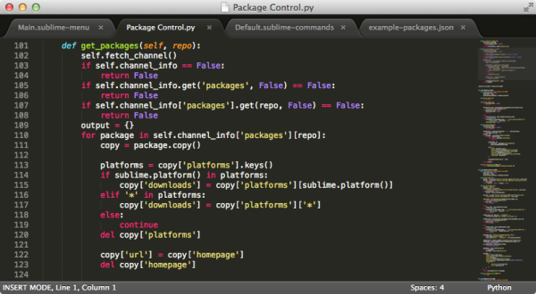

Desde que HTML5 se volvió popular, toda la plataforma web ha progresado enormemente, y la gente empezó a considerar JavaScript como un lenguaje capaz de crear aplicaciones complejas. Han surgido muchas APIs nuevas, y también han aparecido numerosos artículos sobre cómo los navegadores aplican estas tecnologías.
Como lenguaje de script, JavaScript fue creado originalmente para mejorar la capacidad de presentación de las páginas web, pero hoy en día JavaScript se usa casi en todos los lugares que puedas imaginar. Con la mejora continua de las capacidades técnicas de toda la industria, JavaScript ahora puede ejecutarse en el lado del servidor y también puede compilarse en código de aplicaciones móviles nativas. Los desarrolladores de JavaScript actuales son parte de un ecosistema muy rico, y pueden elegir libremente entre cientos de IDE, herramientas y frameworks. Debido a la gran cantidad de opciones y recursos, algunos desarrolladores no saben por dónde empezar a aprender. Me complace hablar y resumir la situación a la que se enfrentan los desarrolladores modernos de JavaScript. Primero presentaré brevemente la historia de JavaScript, y luego cubriré los frameworks, herramientas e IDE más populares en la actualidad.
Rápido repaso histórico
Comencemos un viaje rápido. Retrocedamos a 1995, cuando Netscape Navigator e Internet Explorer 1.0 eran las únicas opciones en cuanto a navegadores. Los sitios web estaban llenos de molestos textos parpadeantes y demasiadas imágenes GIF. Cargar una página con mucho contenido a través de una conexión de acceso telefónico podía tomar hasta dos minutos completos. Luego apareció un lenguaje web que permitía a estos antiguos sitios ejecutar código en el lado del cliente. Ese año fue precisamente el año en que nació JavaScript.
Estos sitios web creados hace 20 años no usaban mucho JavaScript y, por supuesto, no explotaban plenamente el potencial del lenguaje. Ocasionalmente mostraban un cuadro de diálogo emergente para informarte de algo, o mostraban noticias con texto en movimiento en un recuadro, o usaban cookies para guardar tu nombre de usuario, de modo que cuando volvieras a visitar el sitio después de unos meses pudieran mostrar tu nombre directamente. Por supuesto, en el ámbito laboral tampoco existían puestos de trabajo que tuvieran JavaScript como lenguaje de desarrollo principal; en aquel entonces, poder escribir algo de JavaScript en el trabajo ya era muy afortunado. En resumen, la aplicación de JavaScript en los sitios web de aquella época consistía en hacer pequeños trucos con el DOM.
Hoy en día, básicamente puedes ver JavaScript en todas partes. DesdeBootstrapHasta ReactJS, Angular, el omnipresente jQuery, e incluso Node.js ejecutándose en el lado del servidor, JavaScript se ha convertido en uno de los lenguajes web más importantes y populares.
Frameworks
Desde su aparición, uno de los mayores cambios en JavaScript ha sido la forma en que se utiliza. Los días de llamar al incómodo método document.GetElementById y crear los pesados objetos XmlHttpRequest han quedado atrás. En su lugar, se utilizan diversas bibliotecas auxiliares que abstraen estas funcionalidades básicas, haciendo que JavaScript sea más fácil de usar para los desarrolladores. Esta es también una de las principales razones por las que JavaScript está en todas partes hoy en día.
jQuery
jQuery fue lanzado por John Resig en 2006, y proporciona un rico conjunto de herramientas que abstrae y simplifica los comandos y métodos oscuros y misteriosos de JavaScript. La forma más sencilla de mostrar esta herramienta es sin duda mediante ejemplos de código.
Crear una petición AJAX usando JavaScript puro:
function loadXMLDoc() {
var xmlhttp;
if (window.XMLHttpRequest) {
// code for IE7+, Firefox, Chrome, Opera, Safari
xmlhttp = new XMLHttpRequest();
} else {
// code for IE6, IE5
xmlhttp = new ActiveXObject("Microsoft.XMLHTTP");
}
xmlhttp.onreadystatechange = function() {
if (xmlhttp.readyState == 4 ) {
if(xmlhttp.status == 200){
alert("success");
}
else if(xmlhttp.status == 400) {
alert("error 400")
}
else {
alert("something broke")
}
}
}
xmlhttp.open("GET", "test.html", true);
xmlhttp.send();
}
Fuente: Stack Overflow
Y crear una petición AJAX usando jQuery:
$.ajax({
url: "test.html",
statusCode: {
200: function() {
alert("success");
},
400: function() {
alert("error 400");
}
},
error: function() {
alert("something broke");
}
});
jQuery hizo que las complejas funciones de JavaScript fueran fáciles de usar, y la manipulación del DOM se volvió pan comido. Como resultado, jQuery se convirtió en uno de los primeros frameworks de JavaScript ampliamente utilizados, y la idea de abstraer JavaScript se convirtió en la base sobre la que se construyeron otros frameworks.
AngularJS
AngularJS, también conocido comúnmente como "Augular", hizo su aparición en 2009. Es un framework creado por Google con el objetivo de simplificar la creación de aplicaciones de página única (SPA). Al igual que jQuery, su objetivo también es abstraer operaciones complejas en métodos altamente reutilizables. Proporciona a JavaScript una arquitectura de modelo-vista-controlador (MVC).
ReactJS
ReactJS, también conocido comúnmente como "React", es un recién llegado que acaba de entrar en este juego. Fue creado por Facebook y lanzado por primera vez en 2013. Facebook considera que React puede ser un sustituto de Angular para manejar problemas de SPA, así que si crees que Angular y React son frameworks competidores, estás en lo cierto. Sin embargo, la mayor diferencia de React respecto a Angular es que es una biblioteca más eficiente, de mayor rendimiento y más rápida. La siguiente imagen muestra el tiempo que se tarda en renderizar una lista de 1000 elementos en el DOM usando React, Angular, Knockout (otra biblioteca que no se discute en este artículo) y JavaScript puro:

Fuente: The Dapper Developer
Si tu aplicación valora mucho el rendimiento, entonces React es la elección correcta.
Entorno de desarrollo de JavaScript
Para un desarrollo eficiente, el uso de un IDE es muy importante. El nombre completo de IDE es Entorno de Desarrollo Integrado, una aplicación que ofrece a los desarrolladores una serie de herramientas. La parte más importante de esta herramienta suele ser un editor de texto enriquecido que ofrece resaltado de sintaxis, autocompletado y atajos de teclado para acelerar las diversas y tediosas operaciones manuales.
Sublime Text
Sublime Text no es en realidad un IDE, sino un editor de texto ligero y muy rápido para programar, que ofrece resaltado de sintaxis e intuitivos atajos de teclado. Es multiplataforma, por lo que es una opción ideal para aquellos desarrolladores que quieren usar un Mac en un entorno PC (o viceversa). Casi todas las partes de Sublime Text son personalizables, y también ofrece numerosos complementos que le añaden funciones similares a las de un IDE, como la integración con Git y la limpieza de código. Es una buena opción para los entusiastas de JavaScript y los desarrolladores novatos. Cuando se publicó este artículo, el precio de cada licencia de Sublime Text era de 70 dólares.

Fuente: Sublime Text
WebStorm
WebStorm es un IDE inteligente desarrollado por el equipo de JetBrains, centrado principalmente en el desarrollo de HTML, CSS y JavaScript. Solo cobra una tarifa de licencia simbólica (49 dólares en el momento de la publicación de este artículo), y ha sido ampliamente reconocido entre los expertos experimentados en JavaScript, llegando a ser considerado un estándar de facto. Y no es sin razón, porque su función de autocompletado de código y sus herramientas de revisión integradas son prácticamente únicas. WebStorm también incluye un potente depurador de JavaScript y está integrado con varios frameworks de pruebas unitarias populares, como el ejecutor de pruebas Karma y JSDriver, e incluso incluye Mocha con soporte para Node.js.
Una de las mejores características de WebStorm es sin duda su función de edición en vivo (Live Edit). Solo hay que instalar un complemento tanto en Chrome como en WebStorm, y el desarrollador puede ver los resultados directamente en el navegador mientras modifica el código. El desarrollador también puede configurar la edición en vivo para que los cambios se resalten en la ventana del navegador, lo que mejora enormemente la productividad en la depuración y la programación.
En resumen, si JavaScript es tu trabajo a tiempo completo, entonces el IDE WebStorm puede ser una muy buena opción.

Fuente: JetBrains
Brackets
Brackets es un IDE gratuito y de código abierto, centrado en herramientas visuales. Brackets ofrece una función de edición en vivo similar a la de WebStorm, que te permite ver directamente en la ventana del navegador el resultado de los cambios en el código. También admite la edición en paralelo, lo que te permite programar y ver directamente el resultado del código al mismo tiempo, sin necesidad de cambiar entre diferentes aplicaciones ni usar ventanas emergentes. Una de las características más interesantes de Brackets se llama Extract, que puede analizar archivos PSD de Photoshop para obtener información como fuentes, colores y tamaños. Debido a esta característica, Brackets es muy adecuado para aquellos desarrolladores de JavaScript que también realizan trabajos de diseño.
(Haz clic en la imagen para ampliarla)
{kind=link}
Fuente: Brackets
Atom
Atom es un editor de texto enriquecido gratuito y de código abierto lanzado por GitHub, muy fácil de usar. Después de instalarlo, puede ejecutarse directamente sin necesidad de modificar ningún archivo de configuración, y ya "funciona bien". Lo más interesante de Atom es que se puede personalizar en todos sus aspectos (GitHub lo llama "hackeable"). Está construido sobre un núcleo web, por lo que los usuarios pueden personalizar su apariencia escribiendo HTML, CSS y JavaScript estándar. ¿Quieres cambiar el fondo o la fuente de texto de Atom? Solo modifica el CSS. O también puedes descargar y aplicar varios temas creados para Atom. Esta flexibilidad permite que Atom se muestre de la forma que desees. Para los desarrolladores novatos de JavaScript y los usuarios a los que les gusta la personalización, Atom es una excelente herramienta.
(Haga clic en la imagen para ampliarla)

Fuente: Atom
Herramientas de compilación y automatización
Los proyectos modernos de JavaScript tienden a volverse cada vez más complejos y con un número creciente de partes variables. Esto no se debe a que el lenguaje o las herramientas correspondientes sean ineficientes, sino que es una consecuencia directa de la riqueza, la experiencia atractiva y la complejidad de las aplicaciones web que se crean actualmente. Al trabajar en proyectos grandes, a menudo debes realizar muchas tareas repetitivas, ya sea cuando piensas registrar código o construirlo para el entorno de producción. Estas tareas pueden incluir la combinación (bundling), la minificación, la compilación de archivos CSS LESS o SASS, e incluso la ejecución de pruebas. Hacer estas tareas manualmente es frustrante e ineficiente. Una mejor opción es automatizarlas mediante alguna herramienta de construcción que admita estas tareas.
Empaquetado (Bundling) y minificación (Minification)
La mayor parte del JavaScript y CSS que escribes se comparte entre varias páginas web. Por lo tanto, es muy probable que coloques estos contenidos en archivos .js y .css separados y luego los referencies en las páginas web. El resultado es que el navegador del usuario, para mostrar completamente tu aplicación web, necesita enviar una solicitud HTTP para obtener cada archivo (o al menos verificar si estos archivos han cambiado).
Las solicitudes HTTP son costosas. Además del tamaño de la propia solicitud, también pagas por la latencia de la red, las cabeceras HTTP, las cookies, etc. Las herramientas de combinación y minificación están diseñadas para reducir o incluso eliminar por completo el impacto de estas solicitudes.
Empaquetado
Una de las cosas más simples que un desarrollador puede hacer para mejorar el rendimiento del código web es combinarlo. En el proceso de combinación, múltiples archivos JavaScript o CSS se unen en un único archivo JavaScript o CSS. Es como unir varias fotografías panorámicas individuales para formar una única fotografía continua. Al combinar archivos JavaScript y CSS, podemos eliminar una gran parte de la sobrecarga de las solicitudes HTTP.
Minificación
Otra forma en que los desarrolladores de JavaScript pueden mejorar el rendimiento es minificando el código recién combinado. El proceso de minificación comprime el código JavaScript y CSS a la forma más pequeña posible, manteniendo la funcionalidad. Para JavaScript, esto significa renombrar las variables a formas de un solo carácter sin significado y eliminar todos los espacios en blanco y formatos. Para CSS, dado que el estilo de la página depende de los nombres de las variables, por lo general solo se eliminan los formatos y espacios en blanco. La minificación mejora enormemente el rendimiento de la red porque reduce la cantidad de bytes de cada respuesta HTTP.
Código JavaScript AJAX sin minificar, el mismo que se muestra arriba:
$.ajax({
url: "test.html",
statusCode: {
200: function() {
alert("success");
},
400: function() {
alert("error 400");
}
},
error: function() {
alert("something broke");
}
});
El mismo código después de la minificación:
$.ajax({url:"test.html",statusCode:{200:function() {alert("success");},
400:function(){alert("error 400");}},error:function(){alert("something broke");}});
Ten en cuenta que he dividido la salida minificada en dos líneas solo para facilitar la lectura en el artículo; en realidad, la salida minificada suele tener una sola línea.
Cuándo empaquetar y minificar
Normalmente, los pasos de combinación y minificación se ejecutan solo en el entorno de producción, porque así puedes depurar el código original con formato y números de línea en tu entorno local o de desarrollo. Depurar el código minificado que se muestra arriba sería muy difícil, ya que todo el código está en una sola línea. Además, el código minificado se vuelve completamente ilegible y resultará inútil y frustrante al intentar depurar.
Archivos de mapas de código fuente
A veces, algunos errores en el código solo se reproducen en el entorno de producción. De este modo, el código minificado se convierte en un problema a la hora de depurar ciertos problemas. Afortunadamente, JavaScript admite archivos de mapas de origen, que pueden "mapear" entre el código minificado y el código original. Estos archivos de mapa se generan durante la fase de minificación mediante algunas de las herramientas de construcción que se mencionan a continuación. Luego, tu depurador de JavaScript puede utilizar estos mapas para proporcionarte código claro y legible para depurar. Debes publicar los mapas de origen junto con el código real siempre que sea posible, para poder depurar el código si algo falla.
Limpieza de código
Las herramientas de lint revisan tu código en busca de errores y problemas comunes según reglas de formato predefinidas. Los errores que informan estas herramientas suelen ser similares a los siguientes: uso de tabulaciones en lugar de espacios, punto y coma omitido al final de la línea, o uso de llaves sin las sentencias if, for o while. La mayoría de los IDE incluyen herramientas de lint, y algunos también permiten instalar complementos de lint.
Las dos herramientas de lint de JavaScript más populares son JSHint y JSLint. JSLint es un framework de lint desarrollado por Doug Crockford, mientras que JSHint fue bifurcado de JSLint por la comunidad. Se diferencian únicamente en sus estándares de formato de código. Mi consejo es que pruebes ambos y elijas el que mejor se adapte a tu estilo de código.
Automatización de tareas: Grunt
A diferencia de su nombre, Grunt no es una herramienta tosca, sino una robusta herramienta de construcción de línea de comandos que puede ejecutar diversas tareas definidas por el usuario. Con un simple archivo de configuración, puedes hacer que Grunt realice varias tareas, como compilar archivos LESS o SASS, construir y minificar todos los archivos JavaScript y CSS de una carpeta específica, e incluso ejecutar alguna herramienta de lint o framework de pruebas. También puedes configurar Grunt para que se ejecute como un gancho de Git (Git hook), de modo que al confirmar código en el repositorio de control de versiones, automáticamente se minifique y combine tu código.
Grunt admite varios objetivos con nombre, ya que puedes especificar diferentes comandos en diferentes entornos, por ejemplo, puedes designar "dev" y "prod" como objetivos. Esto es muy útil en ciertos escenarios, como combinar y minificar el código en el entorno de producción, mientras que en el entorno de desarrollo se omite este paso para facilitar la depuración.
Una característica muy útil de Grunt se llama "grunt watch", que puede supervisar los cambios en los archivos de un directorio o en un conjunto de archivos. Esta característica se puede integrar en IDE como WebStorm y Sublime Text. Con la función de supervisión, puedes activar eventos según los cambios de archivos. La compilación de LESS o SASS es un uso práctico de esta función: puedes configurar Grunt para que supervise tus archivos LESS o SASS y los compile inmediatamente cuando cambien; los archivos generados después de la compilación se pueden usar directamente en el entorno de desarrollo. También puedes hacer que Grunt ejecute automáticamente alguna herramienta de lint después de modificar cada archivo. Ejecutar tareas en tiempo real mediante grunt watch es una excelente manera de acelerar tu productividad.
Automatización de tareas: Gulp
Grunt y Gulp son herramientas que se usan para resolver el problema de la automatización de la construcción; se puede decir que son competidores directos. La principal diferencia entre ellos es que Grunt se centra más en la configuración, mientras que Gulp se centra más en el código. En el archivo de Grunt configuras las tareas de construcción mediante JSON declarativo, mientras que en el archivo de Gulp escribes funciones de JavaScript para lograr la misma funcionalidad.
El siguiente archivo de configuración de Grunt compila archivos CSS cuando los archivos SASS cambian:
grunt.initConfig({
sass: {
dist: {
files: [{
cwd: "app/styles",
src: "**/*.scss",
dest: "../.tmp/styles",
expand: true,
ext: ".css"
}]
}
},
autoprefixer: {
options: ["last 1 version"],
dist: {
files: [{
expand: true,
cwd: ".tmp/styles",
src: "{,*/}*.css",
dest: "dist/styles"
}]
}
},
watch: {
styles: {
files: ["app/styles/{,*/}*.scss"],
tasks: ["sass:dist", "autoprefixer:dist"]
}
}
});
grunt.registerTask("default", ["styles", "watch"]);
Fuente: Grunt vs Gulp – Beyond the Numbers
El siguiente archivo de configuración de Gulp también compila archivos CSS cuando los archivos SASS cambian:
gulp.task("sass", function () {
gulp.src("app/styles/**/*.scss")
.pipe(sass())
.pipe(autoprefixer("last 1 version"))
.pipe(gulp.dest("dist/styles"));
});
gulp.task("default", function() {
gulp.run("sass");
gulp.watch("app/styles/**/*.scss", function() {
gulp.run("sass");
});
});
Fuente: Grunt vs Gulp – Beyond the Numbers
Le sugiero que elija libremente la que prefiera. Estas dos herramientas, por lo general, a través del administrador de paquetes de Node.jsnpmse descargan.
Resumen
JavaScript ha experimentado una enorme mejora desde los inicios de Internet. Hoy en día, se ha convertido en un componente importante y destacado de las aplicaciones web interactivas.
Los desarrolladores también han experimentado grandes cambios desde 1995. Los desarrolladores de hoy en día están más dispuestos a utilizar frameworks, herramientas e IDE ricos y robustos para mejorar la eficiencia y la productividad del trabajo.
¡Crear tu primera aplicación JavaScript moderna es más fácil de lo que imaginas! Solo elige un IDE (para principiantes recomiendoAtom), y luego instalanpm和grunt. Si luego te quedas atascado en algún punto,Stack Overflowes un recurso muy bueno. Con solo dedicar un poco de tiempo a aprender los conceptos básicos, pronto podrás comenzar a desarrollar y finalmente publicar tu primera aplicación JavaScript moderna.
Recursos
Tutoriales:
Frameworks:
IDE：
Herramientas de lint:
Herramientas de construcción y automatización
Recursos útiles
Fuente: http://www.infoq.com/cn/articles/modern-javascript-toolbox
Haz clic para compartir mis notas
<p style="font-size:14px;">¡Las notas deben ser una extensión del contenido de este artículo!</p><br> <p style="font-size:12px;"><a href="../tougao.html" target="_blank">Para enviar un artículo, haz clic aquí</a></p> <p style="font-size:14px;"><a href="./runoob-user-test-intro.html" target="_blank">Cómo obtener el código de invitación de registro</a></p> <h3 class="text-muted"><i class="fa fa-info-circle" aria-hidden="true"></i> ¡Antes de compartir notas debes <a href=".." class="runoob-pop">iniciar sesión</a>!</h3> <p><a href="./runoob-user-test-intro.html" target="_blank">Cómo obtener el código de invitación de registro</a></p>